TSF4 - Le télésiège de la Croix
Les Gets et le plateau des Chavannes
Les Gets est un village de Haute-Savoie installé au col du même nom, entre la vallée du Giffre et la Dranse de Morzine. Son nom vient du patois désignant un couloir de descente du bois, matériau resté central dans l'architecture des chalets du village. La station de ski naît en 1936 avec l'ouverture de son premier téléski, et s'adresse aujourd'hui encore à une clientèle attachée au patrimoine et aux paysages traditionnels de montagne. Reliée aux Portes du Soleil, elle partage son domaine avec Morzine, à l'exception du secteur du Mont Chéry.
Le télésiège de la Croix est implanté sur le plateau des Chavannes, à la sortie de la télécabine. Il permet de rejoindre rapidement le domaine d'altitude et constitue une alternative appréciée en cas de forte affluence en bas de la station.
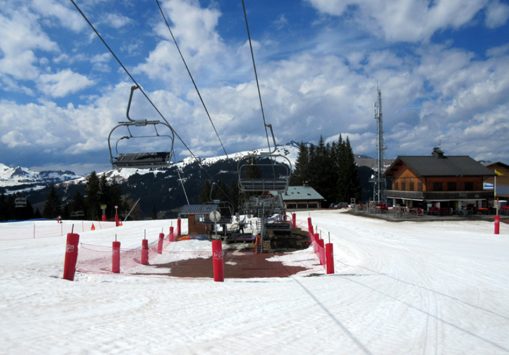
Histoire du secteur
Construit par Skirail en 2000, le télésiège de la Croix a remplacé le téléski des Ebauds ainsi que l'ancien télésiège 2 places de la Croix des Chavannes, dont les sièges étaient en bois. La gare amont, qui abrite la partie motrice, se trouve à proximité de celle du télésiège des Chavannes Express.
L'appareil dessert trois pistes bleues : Gentiane, qui redescend directement vers la station, Bruyère, qui rejoint le télésiège des Folliets du Golf et permet de gagner Morzine, et Violette, qui amène vers les secteurs Ranfoilly et Rosta. Il donne également accès à un mini border-cross ainsi qu'à la piste rouge Belle Mouille, en direction des secteurs de Nyon et Chamossière côté Morzine.
Fréquenté avant tout par des skieurs recherchant des pistes bleues faciles, ce télésiège offre aussi une bonne alternative pour rejoindre le domaine d'altitude : l'enchaînement de la télécabine des Chavannes puis du télésiège de la Croix mène au même endroit que le télésiège des Chavannes Express.
Localisation géographique
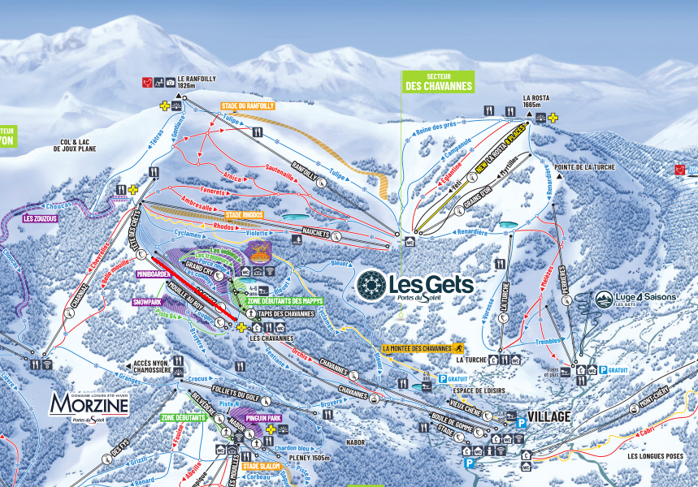
Infrastructures
Le télésiège de la Croix est un télésiège à attaches fixes 4 places, construit par Skirail et mis en service en 2000. Il fonctionne en saison hivernale, avec une capacité de 2400 personnes par heure à une vitesse d'exploitation de 2,2 m/s, pour un temps de trajet d'environ 5 minutes et 40 secondes.
La gare aval se situe à 1484 mètres d'altitude et la gare amont à 1614 mètres, soit un dénivelé de 130 mètres pour une longueur développée de 747 mètres. La pente moyenne est de 17,69 % et la pente maximale atteint 44,7 %.
La montée s'effectue par la droite. La gare motrice est installée en amont, tandis que la tension du câble est assurée en aval. La ligne compte 8 pylônes, numérotés de 2 à 9, et l'installation dispose de 109 sièges.
La gare aval
La gare aval assure la tension de l'installation. Elle est implantée sur le plateau des Chavannes, directement à la sortie de la télécabine, ce qui en fait un point de passage privilégié pour rejoindre le domaine d'altitude.
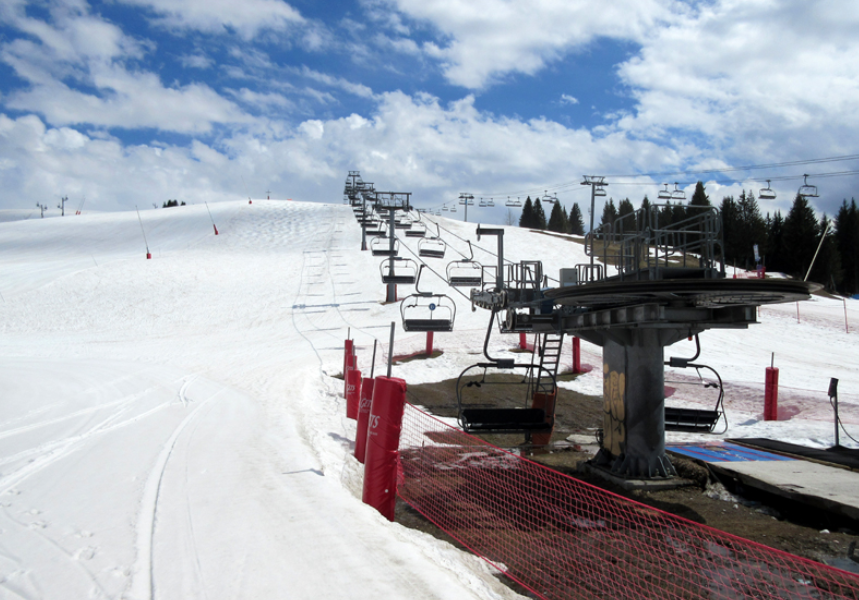
Ligne
La ligne du télésiège de la Croix développe 747 mètres pour un dénivelé de 130 mètres, avec une pente moyenne de 17,69 % et une pente maximale de 44,7 %. Elle est portée par 8 pylônes, numérotés de 2 à 9.
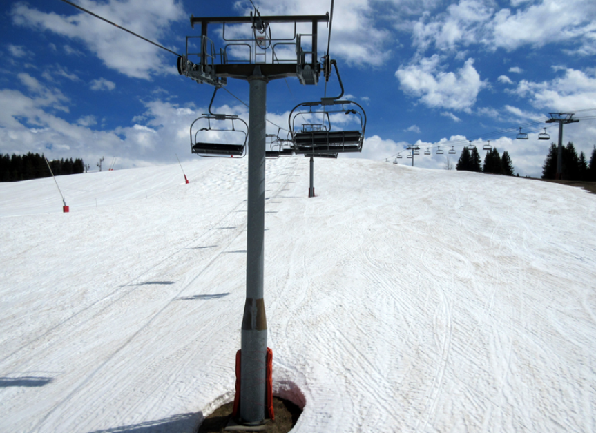
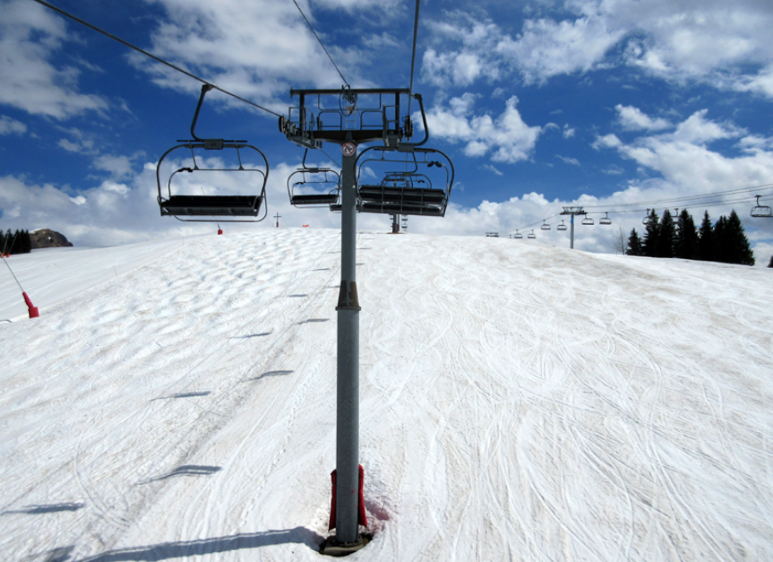
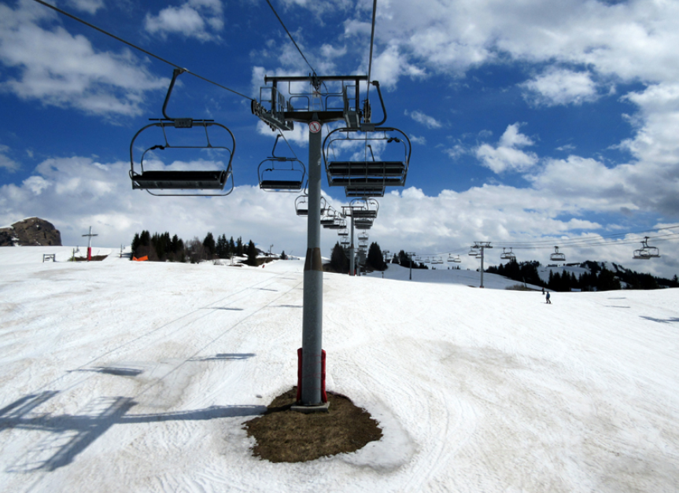
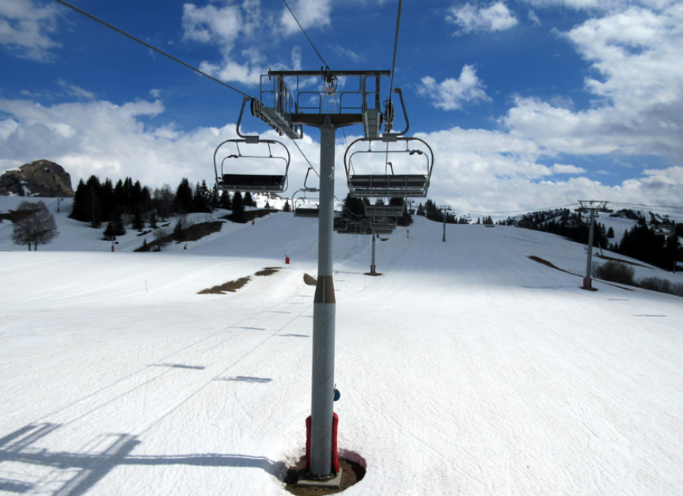
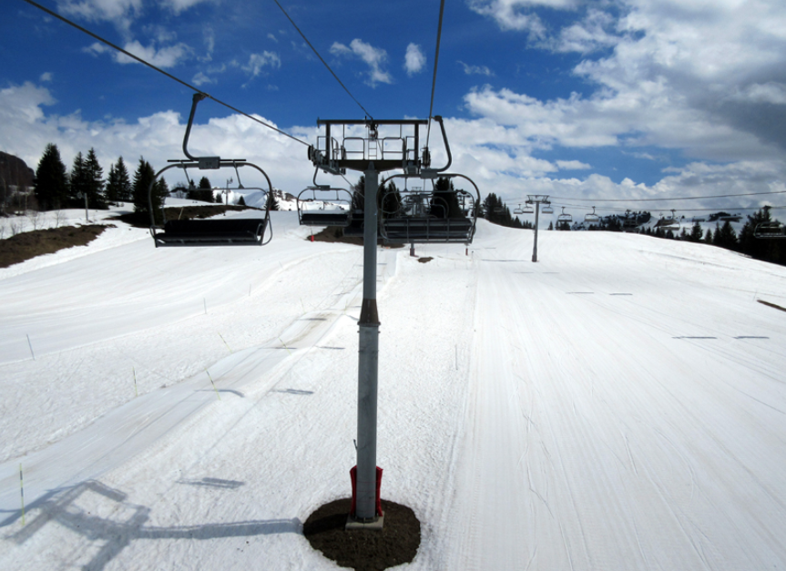
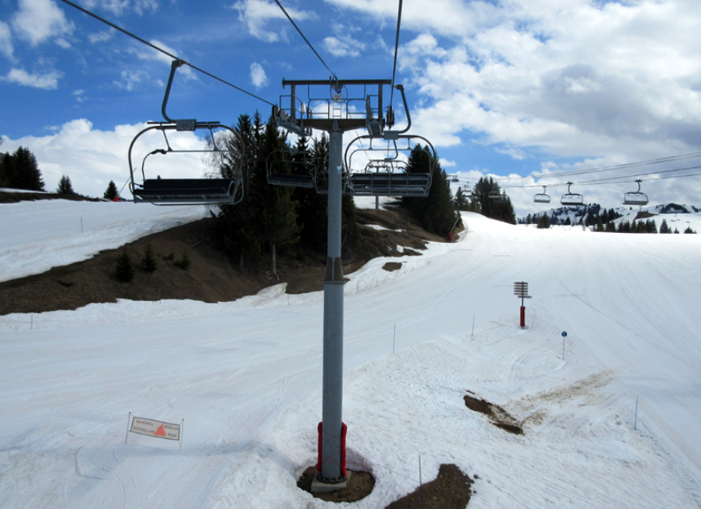
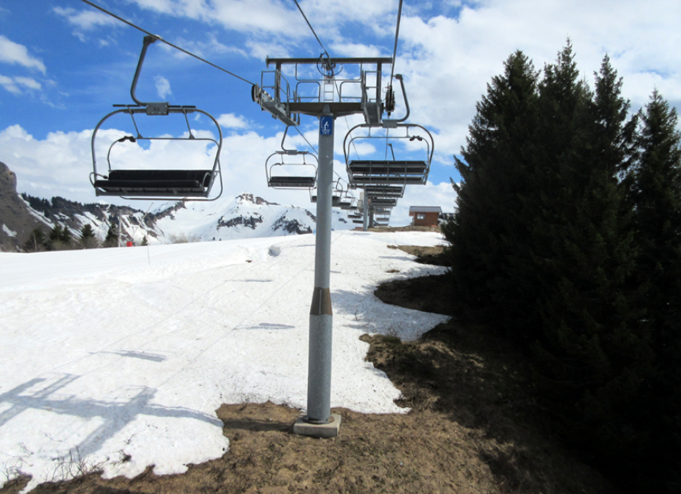
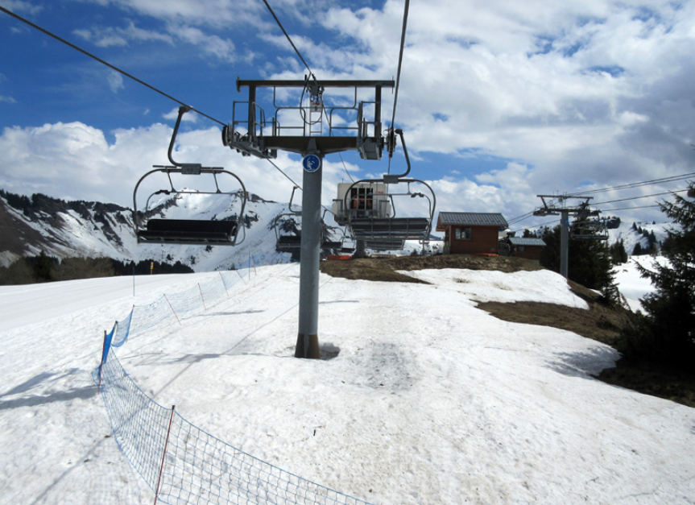
La gare amont
La gare amont, de type motrice, se situe à proximité immédiate de celle du télésiège des Chavannes Express, sur le plateau des Chavannes.
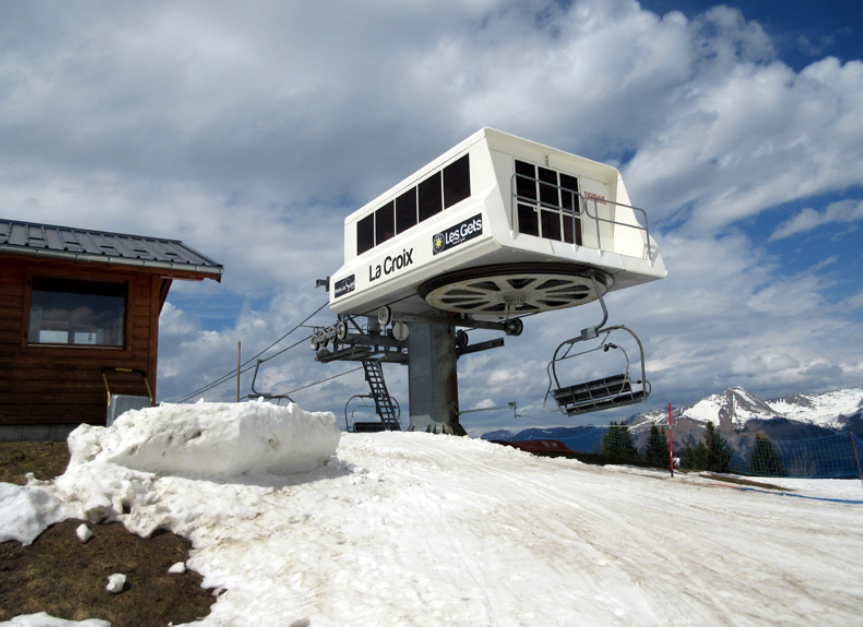
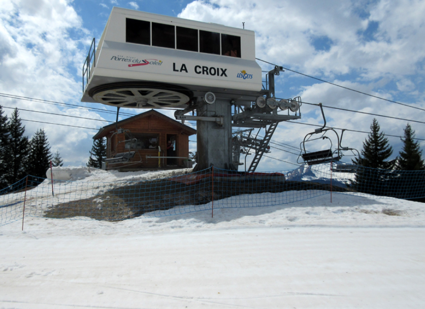
Photos diverses
Cette section regroupe quelques photographies supplémentaires du télésiège de la Croix, entre détail des sièges et vue d'ensemble de la ligne.
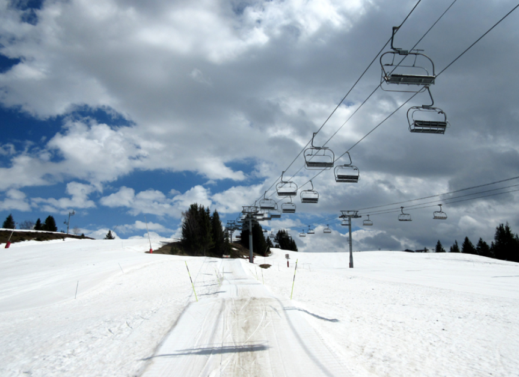
Conclusion
Mis en service en 2000 par Skirail, le télésiège de la Croix reste aujourd'hui un appareil clé du plateau des Chavannes, à la fois pour desservir des pistes bleues accessibles à tous et pour fluidifier la circulation vers le domaine d'altitude en période de forte affluence.